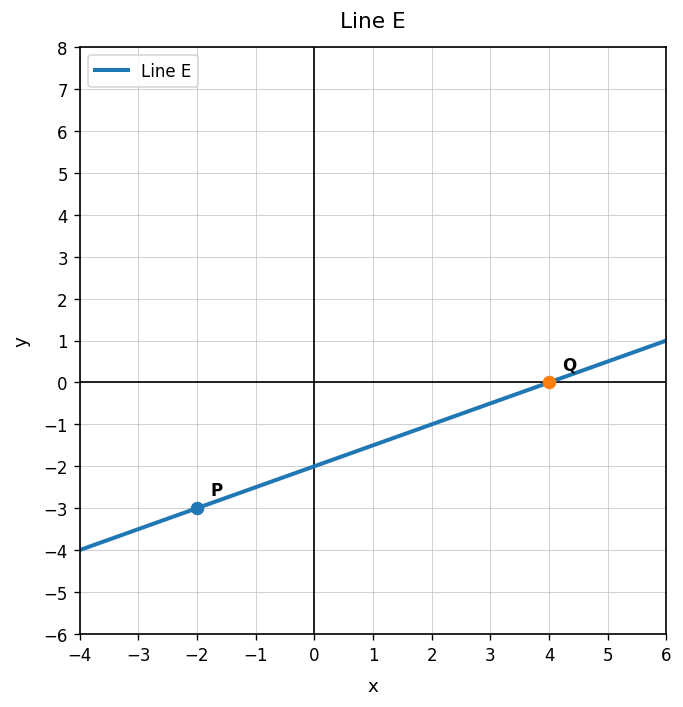
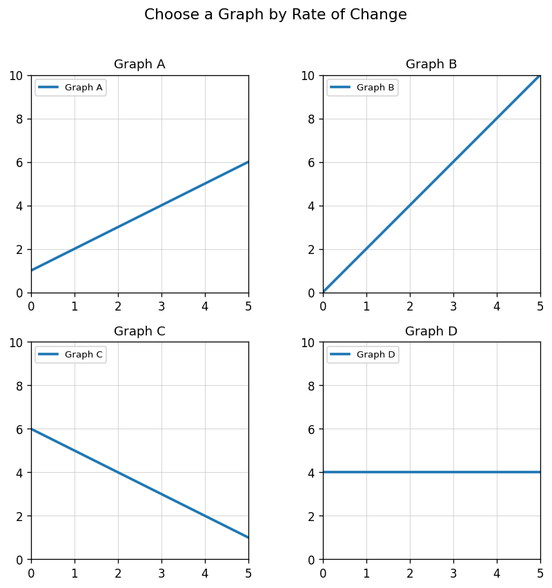

Use Line E. Find the slope using the labeled points.

Find the rate of change from the table.
| $x$ | 0 | 1 | 2 | 3 |
|---|---|---|---|---|
| $y$ | 18 | 14 | 10 | 6 |
Find the slope between $(-1,7)$ and $(3,-5)$.
A water tank loses 12 gallons over 4 minutes at a constant rate. Find and interpret the rate of change.
Determine whether the relationship has a constant rate of change. Explain.
| Time | 0 | 1 | 2 | 3 |
|---|---|---|---|---|
| Distance | 5 | 9 | 13 | 18 |
Use the four graphs. Which graph has a zero rate of change? Which graph has a negative rate of change?

A student says the slope from $(0,3)$ to $(4,11)$ is $\frac{4}{8}$ because $x$ changed by 4 and $y$ changed by 8. Explain the mistake and find the correct slope.
Create a table with four points that has a constant rate of change of $5$. Explain how the table shows the rate.